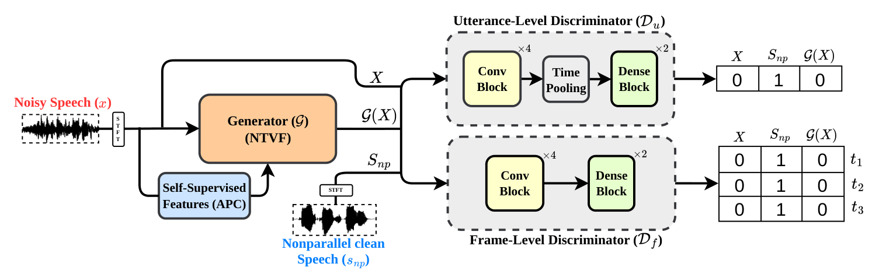

UFL-GAN: A Multi-Discriminator GAN for Unsupervised Speech Enhancement
Satvik Bejugam, Venkatesh Parvathala, K. Sri Rama Murty
Abstract: Most deep learning based speech enhancement methods are usually trained in a supervised fashion, i.e., they typically rely on parallel corpora of noisy and clean speech pairs. This is often difficult to obtain in real-world scenarios, leading to the use of synthetic data. In this work, we propose a novel unsupervised speech enhancement method that does not require paired training data. We introduce a multi-discriminator GAN-based architecture to capture global (or utterance-level) and local (or frame-level) characteristics of the speech signal. Additionally, we incorporate self-supervised representations from a pre-trained model to provide auxiliary information to the generator and thereby enhance the denoising capability. Our extensive experimental results on the VoiceBank+DEMAND dataset demonstrate that the proposed method achieves comparable or better performance across both intrusive and non-intrusive quality measures.

Architecture of the proposed UFL-GAN.
Each example shows a spectrogram montage (Clean / Noisy / U / F / UF) above the corresponding audio. U uses an utterance-level discriminator, F a frame-level discriminator, and UF, the proposed approach, combines both.